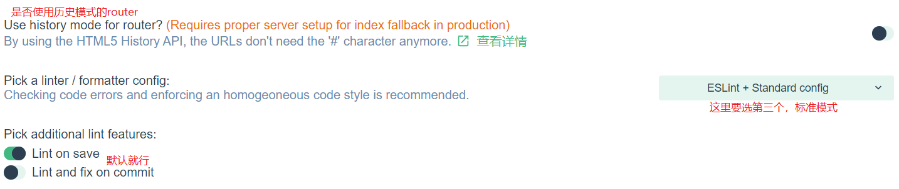
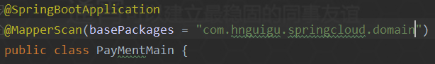

学习笔记
1. SpringMVC设置编码和请求头
1使用的是@RequestBody 和@RequestMapping这两个注解, 设置@RequestBody, 返回参数是json
使用@RequestMapping，这是 springMVC的写法，@RequestMapping("aa"),这个aa就相当于servlet中的action， 在里面设置
produces="application/json;charset=utf-8"可以把Content-Typeh设置成这个，解决前台拿数据 乱码问题
###2. maven项目clean或其他命令出错时，可能项目的名字是汉字导致的
###3. vue自定义验证规则之只能输入正整数
1. 现在input输入框中绑定一个 值发生改变就出发的事件 @keyup.native = "aa"
2.
xxxxxxxxxx61methods: {2// 验证只能输入正整数3aa(){4this.single_bet_min.value=this.single_bet_min.value.replace(/[^\.\d]/g,'');5this.single_bet_min.value=this.single_bet_min.value.replace('.','');6}
###4. springMVC处理跨域请求，在contorller类上加这个注解
xxxxxxxxxx11@CrossOrigin(origins = "*", maxAge = 3600)
###5.在idea上配置vue环境
首先安装 node.js
- 查看node版本号： node -v
- 查看node安装路径： where node
安装阿里镜像和vue-cli
安装镜像： npm i -g cnpm --registry=https:
安装cli：
xxxxxxxxxx21npm i -g vue-cli //这个是安装命令2vue -V //测试是否安装成功：
然后安装webpack打包工具： cnpm install -g webpack
使用图形化界面创建vue-cli项目： 在命令行输入：vue ui
在idea中配置
- 1.安装vue.js插件
- 2.配置HTML支持.vue后缀的文件。

- 3.配置ECMAScript6


- 然后点击+号，找到npm
 ###6.vue图形化页面搭建vue-cli
###6.vue图形化页面搭建vue-cli
1.打开命令行输入vue ui
2.这个是第一步要选择的


安装element-ui：插件 => 添加插件 => 搜索element-ui => 点击安装
安装axios： 依赖 => 添加依赖 => 搜索axios => 点击安装 ###7.vuex的简单使用
先安装vuex： npm i vuex -S
在mian.js入口函数中引入
xxxxxxxxxx21import Vuex from "vuex"2Vue.use(Vuex)然后建立一个仓库
xxxxxxxxxx101var store = new Vuex.Store({2state: { //用来存储数据3totalconunt: 14},5mutations: { //这里面的放啊是用来修改上面属性中的数据的6updateconunt(state, arg) {7state.totalcount = arg8}9}10});然后要在vue对象中绑定
xxxxxxxxxx51var vue = new Vue({2el: '#app',3data: {},4store: store //可以简写成store5})可以通过this.$store.store.totalcount来使用state中的参数，通过this.$store.commit("updateconunt",参数一)来调用 ###8.ssm聚合工程(注解方式) ####1.先建好工程，建好模块，把每一个工程的pom都依赖好，导入jar包，然后开始编写controller层 ####2.编写controller

1.在controller工程中建包：con.hnguigu.web和com.hnguigu.config
2.在web下建一个web工程的启动类MyServletInitializer，相当于disparcatchServlet
x1//1.继承下面这个类，实现下面的三个方法2public class MyServletInitializer extends AbstractAnnotationConfigDispatcherServletInitializer {3@Override4protected Class<?>[] getRootConfigClasses() {5//这个相当于application.xml，是大容器6return new Class[]{MyRootConfig.class};7}89@Override10protected Class<?>[] getServletConfigClasses() {11//这个相当于springmvc.xml，是小容器，12return new Class[]{MyServletConfig.class};13}1415@Override16protected String[] getServletMappings() {17//这个就是拦截所有请求，相当于disparcatchServlet18return new String[]{"/"};19}20}####3.编写MyRootConfig类(大容器)
大容器需要的注解
xxxxxxxxxx51@Configuration //标名这是一个配置类2@ComponentScan(basePackages = "com.hnguigu") //扫描这里的包3@MapperScan(basePackages = "com.hnguigu.mapper")//扫描mapper4@PropertySource(value = "classpath:jdbc.properties")//读jdbc配置文件5@EnableTransactionManagement //事务相关然后就是把数据源，MybatisSqlSessionFactoryBean， DataSourceTransactionManager加入ioc容器
xxxxxxxxxx251@Bean2public DataSource getDataSource() {3DruidDataSource dataSource = new DruidDataSource();4dataSource.setDriverClassName(driver);5dataSource.setUrl(url);6dataSource.setUsername(username);7dataSource.setPassword(password);8return dataSource;9}1011@Bean12public MybatisSqlSessionFactoryBean getMybatisSqlSessionFactoryBean(DataSource dataSource) {13Resource resource = new ClassPathResource("myBatis-config.xml");14MybatisSqlSessionFactoryBean factoryBean = new MybatisSqlSessionFactoryBean();15factoryBean.setDataSource(dataSource);16factoryBean.setConfigLocation(resource);17return factoryBean;18}1920@Bean21public DataSourceTransactionManager getDataSourceTransactionManager(DataSource dataSource) {22DataSourceTransactionManager transactionManager = new DataSourceTransactionManager();23transactionManager.setDataSource(dataSource);24return transactionManager;25}####4.编写MyServletConfig类(小容器)
小容器需要的注解
xxxxxxxxxx31@Configuration2@ComponentScan(basePackages = "com.hnguigu.web.controller")3@EnableWebMvc配置视图解析器，静态资源过滤器，拦截器， 异常处理解析器，文件上传解析器
xxxxxxxxxx401public class MyServletConfig extends WebMvcConfigurerAdapter {//先继承这个类2//public class MyServletConfig implements WebMvcConfigurer {3//视图解析器4@Override5public void configureViewResolvers(ViewResolverRegistry registry) {6registry.jsp("/WEB-INF/pages", ".jsp");7}89//静态资源过滤器10@Override11public void addResourceHandlers(ResourceHandlerRegistry registry) {12registry.addResourceHandler("/js/**").addResourceLocations("/js/");13registry.addResourceHandler("/css/**").addResourceLocations("/css/");14}1516//拦截器17@Override18public void addInterceptors(InterceptorRegistry registry) {19registry.addInterceptor(new HandleInterceptor3())20.addPathPatterns("/**")21.excludePathPatterns("/Replydetail/*");22}2324//异常处理解析器25@Override26public void configureHandlerExceptionResolvers(List<HandlerExceptionResolver> exceptionResolvers) {27exceptionResolvers.add(new CostomExceptionHandle());28}2930//文件上传解析器31public CommonsMultipartResolver commonsMultipartResolver() {32CommonsMultipartResolver commonsMultipartResolver = new CommonsMultipartResolver();3334commonsMultipartResolver.setDefaultEncoding("utf-8");35commonsMultipartResolver.setMaxUploadSize(8388608);36commonsMultipartResolver.setMaxUploadSizePerFile(3145728);3738return commonsMultipartResolver;39}40}###9.SpringBoot项目热部署 ####方法1(SpringBoot项目) ####1.ctrl + shift + s
 ####2.ctrl + shift + alt + /，选择Registry
####2.ctrl + shift + alt + /，选择Registry ####3.在pom文件中导入依赖即可
####3.在pom文件中导入依赖即可org.springframework.boot spring-boot-devtools true

####方法2(聚合工程) ###1.在父工程的pom中引入
xxxxxxxxxx91<plugins>2<plugin>3<groupId>org.apache.maven.plugins</groupId>4<artifactId>maven-site-plugin</artifactId>5<configuration>6<locales>en,fr</locales>7</configuration>8</plugin>9</plugins>
###2.子工程中引入
xxxxxxxxxx61<dependency>2<groupId>org.springframework.boot</groupId>3<artifactId>spring-boot-devtools</artifactId>4<scope>runtime</scope>5<optional>true</optional>6</dependency>
###3. ctrl + shift + s
 ###4. ctrl + shift + alt + /, 选择Registry
###4. ctrl + shift + alt + /, 选择Registry ###10.@ControllerAdvice的应用场景
####1.全局异常处理
###10.@ControllerAdvice的应用场景
####1.全局异常处理使用 @ControllerAdvice 实现全局异常处理，只需要定义类，添加该注解即可定义方式如下：
xxxxxxxxxx111@ControllerAdvice2public class MyGlobalExceptionHandler {3@ExceptionHandler(Exception.class)4public ModelAndView customException(Exception e) {5ModelAndView mv = new ModelAndView();6mv.addObject("message", e.getMessage());7mv.setViewName("myerror");8return mv;9}10}11@ExceptionHandler 注解用来指明异常的处理类型，即如果这里指定为 NullpointerException，则数组越界异常就不会进到这个方法中来。
####2.全局数据绑定
全局数据绑定功能可以用来做一些初始化的数据操作，我们可以将一些公共的数据定义在添加了 @ControllerAdvice 注解的类中，这样，在每一个 Controller 的接口中，就都能够访问导致这些数据。
使用步骤，首先定义全局数据，如下：
xxxxxxxxxx101@ControllerAdvice2public class MyGlobalExceptionHandler {3@ModelAttribute(name = "md")4public Map<String,Object> mydata() {5HashMap<String, Object> map = new HashMap<>();6map.put("age", 99);7map.put("gender", "男");8return map;9}10}使用 @ModelAttribute 注解标记该方法的返回数据是一个全局数据，默认情况下，这个全局数据的 key 就是返回的变量名，value 就是方法返回值，当然开发者可以通过 @ModelAttribute 注解的 name 属性去重新指定 key。
定义完成后，在任何一个Controller 的接口中，都可以获取到这里定义的数据：
xxxxxxxxxx101@RestController2public class HelloController {3@GetMapping("/hello")4public String hello(Model model) {5Map<String, Object> map = model.asMap();6System.out.println(map);7int i = 1 / 0;8return "hello controller advice";9}10}###11.CentO6.5不能上网的情况
可能是因为本机服务没有开，

###vue-cli3项目打包 ####在项目根目录下创建vue.config.js文件，加入如下配置，然后在cmd窗口cd到项目目录，然后npm run build即可
xxxxxxxxxx361const path = require('path')2const debug = process.env.NODE_ENV !== 'production'34module.exports = {5publicPath: process.env.NODE_ENV === 'production' ? './' : '/', // 根域上下文目录6outputDir: 'dist', // 构建输出目录7assetsDir: 'assets', // 静态资源目录 (js, css, img, fonts)8lintOnSave: false, // 是否开启eslint保存检测，有效值：ture | false | error9runtimeCompiler: true, // 运行时版本是否需要编译10transpileDependencies: [], // 默认babel-loader忽略mode_modules，这里可增加例外的依赖包名11productionSourceMap: false, // 是否在构建生产包时生成 sourceMap 文件，false将提高构建速度12configureWebpack: config => { // webpack配置，值位对象时会合并配置，为方法时会改写配置13if (debug) { // 开发环境配置14config.devtool = 'cheap-module-eval-source-map'15} else { // 生产环境配置16}17},18devServer: {19open: true, //自动启动浏览器20host: '0.0.0.0',21port: 8081,22https: false,23hotOnly: false, //webpack已经默认开启，这里false24proxy: { // 配置跨域25'/api': {26target: 'http://127.0.0.1:8080/renewal', //打包后接口地址27ws: true,28changOrigin: true,29pathRewrite: {30'^/api': ''31}32}33},34before: app => {}35}36}
###把打包好的vue项目在nginx上跑起来
安装nginx，直接解压，然后双击nginx.exe即可启动nginx，
然后进入修改nginx的配置文件，/nginx/conf/nginx.conf
然后重启nginx，nginx.exe -s reload，最后访问127.0.0.1：端口即可访问项目 ###ssm+shiro+vue跨域问题
首先在vue项目中main.js中加一句axios.defaults.withCredentials = true，这句话的意思是允许前端携带cookie
然后再跨域过滤器中配置一段代码
xxxxxxxxxx121HttpServletResponse httpServletResponse = (HttpServletResponse) response;2HttpServletRequest httpServletRequest = (HttpServletRequest) request;34httpServletResponse.setHeader("Access-control-Allow-Origin", httpServletRequest.getHeader("Origin")); //标识允许哪个域到请求，直接修改成请求头的域5httpServletResponse.setHeader("Access-Control-Allow-Methods", "GET,POST,OPTIONS,PUT,DELETE");//标识允许的请求方法6// 响应首部 Access-Control-Allow-Headers 用于 preflight request （预检请求）中，列出了将会在正式请求的 Access-Control-Expose-Headers 字段中出现的首部信息。修改为请求首部7httpServletResponse.setHeader("Access-Control-Allow-Headers", httpServletRequest.getHeader("Access-Control-Request-Headers"));8httpServletResponse.setContentType("application/json;charset=utf-8");9//这句是允许接受跨域cookie设置，因为shiro是根据jsessionid作为用户的唯一标识10httpServletResponse.setHeader("Access-Control-Allow-Credentials", "true");1112chain.doFilter(request, httpServletResponse);###nginx反向代理跨域
nginx配置文件
xxxxxxxxxx311server {2listen 8082; //前端端口3server_name localhost;4charset utf-8; #设置编码为utf-856location / {78add_header 'Access-Control-Allow-Origin' '*' always;9add_header 'Access-Control-Allow-Credentials' 'true' always;10add_header 'Access-Control-Allow-Methods' 'GET, POST, OPTIONS' always;11add_header 'Access-Control-Allow-Headers' 'DNT,X-CustomHeader,Keep-Alive,User-Agent,X-Requested-With,If-Modified-Since,Cache-Control,Content-Type' always;1213root F:\idea-workspace\Shiro\ssm+shiro+vue\ssm+shiro_vue\shiro_vue\dist;14index index.html index.htm;15}1617location /user/ {1819add_header 'Access-Control-Allow-Origin' '*' always;20add_header 'Access-Control-Allow-Credentials' 'true' always;21add_header 'Access-Control-Allow-Methods' 'GET, POST, OPTIONS' always;22add_header 'Access-Control-Allow-Headers' 'DNT,X-CustomHeader,Keep-Alive,User-Agent,X-Requested-With,If-Modified-Since,Cache-Control,Content-Type' always;2324proxy_pass http://127.0.0.1:8080; # 后端接口 IP:port25}2627error_page 500 502 503 504 /50x.html;28location = /50x.html {29root html;30}31}###linux查看某个端口是否使用：lsof -i ：6379 ###linux升级内核 1.导入key rpm --import https://www.elrepo.org/RPM-GPG-KEY-elrepo.org, 如果报SSL错误, 则需要更新网络安全服务 yum update nss 2.安装elrepo的yum源 到该http://elrepo.org/tiki/tiki-index.php网址找到最新的包, 执行 rpm -Uvh https://www.elrepo.org/elrepo-release-6-8.el6.elrepo.noarch.rpm 3.安装内核
yum --enablerepo=elrepo-kernel install kernel-lt -y- 最后修改引导文件,将默认引导改为0 vim /etc/grub.conf 将default改成0, 如果原来是0,则改成1. 5 最最后 reboot一下, 然后再用uname -a 查看一下内核版本就可以了!!!!!!!!!!!!!!!!! ###docker安装时出现Cannot retrieve metalink for repository: epel. Please verify its path and try again
解决方法： 一句话：把/etc/yum.repos.d/epel.repo，文件第3行注释去掉，把第四行注释掉。具体如下：
打开/etc/yum.repos.d/epel.repo，将
[epel] name=Extra Packages for Enterprise Linux 6 - $basearch #baseurl=http://download.fedoraproject.org/pub/epel/6/$basearch mirrorlist=https://mirrors.fedoraproject.org/metalink?repo=epel-6&arch=$basearch 修改为
[epel] name=Extra Packages for Enterprise Linux 6 - $basearch baseurl=http://download.fedoraproject.org/pub/epel/6/$basearch #mirrorlist=https://mirrors.fedoraproject.org/metalink?repo=epel-6&arch=$basearch 再清理源，重新安装
yum clean all yum install -y 需要的包 ###centos6.5安装docker报错，docker 已死，但 pid 文件仍存
输入命令，然后重启
xxxxxxxxxx31命令：yum install device-mapper-event-libs23重启：/etc/init.d/docker restart###解决低版本的MySQL客户端的“error 2059: Authentication plugin ‘caching_sha2_password’ cannot be loaded”错误

用高版本的 MySQL，或者进入该 Docker 容器，登录 MySQL 服务器
执行 MySQL shell 命令查看服务器的版本：
xxxxxxxxxx71命令：select version();2执行结果：3| version() |4+-----------+5| 8.0.16 |6+-----------+71 row in set (0.00 sec)查看当前默认的密码认证插件：
xxxxxxxxxx71命令： show variables like 'default_authentication_plugin';23| Variable_name | Value |4+-------------------------------+-----------------------+5| default_authentication_plugin | caching_sha2_password |6+-------------------------------+-----------------------+71 row in set (0.01 sec)查看当前所有用户绑定的认证插件：
命令 select host,user,plugin from mysql.user;
+-----------+------------------+-----------------------+ | host | user | plugin | +-----------+------------------+-----------------------+ | % | root | caching_sha2_password | | localhost | healthchecker | caching_sha2_password | | localhost | mysql.infoschema | caching_sha2_password | | localhost | mysql.session | caching_sha2_password | | localhost | mysql.sys | caching_sha2_password | +-----------+------------------+-----------------------+ 5 rows in set (0.00 sec)
假如想更改 root 用户的认证方式
xxxxxxxxxx81# 修改加密规则2> ALTER USER 'root'@'%' IDENTIFIED BY 'root' PASSWORD EXPIRE NEVER;3# 更新用户密码4> ALTER USER 'root'@'%' IDENTIFIED WITH mysql_native_password BY '123456';5# 赋予 root 用户最高权限6> grant all privileges on *.* to root@'%' with grant option;7# 刷新权限8> flush privileges;注意：在这之后，将不再支持以下的权限授予语句：
grant all privileges on . to root@'%' identified by '123456' with grant option; ###springboot根据sql脚本建表不成功
解决方法：
（1） 在application配置文件指定执行sql（静态资源）的地方加上initialization-mode:always即可
（2）如果你配置文件没有指定执行文件的名称而是使用默认的schema.sql或者schema-all.sql的话就在配置文件中加上
spring.datasource.initialization-mode=always
原理：
- 因为SpringBoot在启动时，只有检测到spring.datasource.initialization-mode=ALWAYS配置，然后再检测spring.datasource.schema，且配置的sql角本命令不为空，才会去执行schema和spring.datasource.data。因此需要在scheme.sql中随便写一句sql语句。 所以在application.properties/application.yml文件中必须配置spring.datasource.initialization-mode=ALWAYS ###vue前后端分离实现文件上传
 ###idea将web项目打包成war包
###idea将web项目打包成war包 ###在nginx上挂载本地文件和本地nginx.conf文件
###在nginx上挂载本地文件和本地nginx.conf文件主要命令
xxxxxxxxxx71docker run --name mynginx -d -p 80:802-v /data/nginx/html:/usr/share/nginx/html3-v /data/nginx/conf/nginx.conf:/etc/nginx/nginx.conf4-v /data/nginx/conf.d/default.conf:/etc/nginx/conf.d/default.conf5-v /data/nginx/logs:/var/log/nginx6nginx7把本地的/data/nginx下的各个文件挂载到nginx上###springboot整合mybatis-plus和mybatis
server: port: 8001 #端口号
spring: application: name: cloud-payment-service # 服务名称 datasource: type: com.alibaba.druid.pool.DruidDataSource url: jdbc:mysql://localhost:3306/guigu?useUnicode=true&characterEncoding=UTF-8&useSSL=false&serverTimezone=GMT%2B8 password: root username: root driver-class-name: com.mysql.cj.jdbc.Driver
整合mybatis(配置这个即可开始使用) #mybatis:
mapper-locations: classpath:mapper/*.xml
type-aliases-package: com.hnguigu.springcloud.domain # 实体类所在包名， 会用包名简单映射
整合mybatis-plus()
mybatis-plus相关配置
mybatis-plus:
xml扫描，多个目录用逗号或者分号分隔（告诉 Mapper 所对应的 XML 文件位置）
mapper-locations: classpath:mapper/*.xml
以下配置均有默认值,可以不设置
global-config: db-config: #主键类型 AUTO:"数据库ID自增" INPUT:"用户输入ID",ID_WORKER:"全局唯一ID (数字类型唯一ID)", UUID:"全局唯一ID UUID"; id-type: auto #字段策略 IGNORED:"忽略判断" NOT_NULL:"非 NULL 判断") NOT_EMPTY:"非空判断" field-strategy: NOT_EMPTY #数据库类型 db-type: MYSQL configuration: # 是否开启自动驼峰命名规则映射:从数据库列名到Java属性驼峰命名的类似映射 map-underscore-to-camel-case: true # 如果查询结果中包含空值的列，则 MyBatis 在映射的时候，不会映射这个字段 call-setters-on-nulls: true # 这个配置会将执行的sql打印出来，在开发或测试的时候可以用 log-impl: org.apache.ibatis.logging.stdout.StdOutImpl
- 配置完yml文件后还需要在主启动类加个扫描注解
- 
编写配置类
xxxxxxxxxx91@Configuration2public class MybatisPlusConfig {34@Bean5public PaginationInterceptor paginationInterceptor() {6return new PaginationInterceptor();7}89}###在日志中输出消息的方法
 ###使用restTemplate进行远程调用
####1.导入spring相关依赖，
###使用restTemplate进行远程调用
####1.导入spring相关依赖，
org.springframework.boot spring-boot-starter-web @Configuration public class ApplicattionContextConfig {
xxxxxxxxxx41@Bean2public RestTemplate getRestTemplate() {3return new RestTemplate();4}} ####3. 调用 public static final String URL = "http://localhost:8001";
@Resource private RestTemplate restTemplate;
@GetMapping("/payment/add") public CommonReault
add(Payment payment) { // 三个参数分别是， 要远程调用的url地址， 第二个是参数， 第三个是返回值类型 return restTemplate.postForObject(URL + "/payment/payment", payment, CommonReault.class); } ###centos7的ip是127.0.0.1解决 vi /etc/sysconfig/network-scripts/ifcfg-ens33 然后重启 service network restart ###centos7.0 没有netstat 和 ifconfig, wget命令问题
yum install net-tools
(wget没有的话执行以下命令)
yum -y install wget
yum -y install setup
yum -y install perl
###Centos7安装docker ####查看内核版本, 要大于3.10
uname -a ####把yum包更新到最新 yum update ####安装需要的软件包,yum-util 提供yum-config-manager功能，另外两个是devicemapper驱动依赖的 yum install -y yum-utils device-mapper-persistent-data lvm2
设置yum源（选择其中一个）
yum-config-manager --add-repo http://download.docker.com/linux/centos/docker-ce.repo（中央仓库）
yum-config-manager --add-repo http://mirrors.aliyun.com/docker-ce/linux/centos/docker-ce.repo（阿里仓库） ####查看所有仓库中所有docker版本 yum list docker-ce --showduplicates | sort -r ####安装docker yum install docker-ce-18.03.1.ce ####启动docker systemctl start docker ###解决git push时出现Failed to connect to github.com port 443: Timed out
把C:\Windows\System32\drivers\etc下的host文件中关于github的都注释掉就可以了 ###安装ik分词器，git地址
- 下载好.zip后缀的文件后使用解压： unzip elasticsearch.zip -d ik
- 然后把ik文件夹传到容器内部 docker cp ik 容器名:地址(例如: docker cp ik elasticsearch:/usr/share/elasticsearch/plugins)
- 重启elasticsearch容器，然后在kibana中测试，ik分词器中包括了ik_smart和ik_max_word两种 GET _analyze { "analyzer": "ik_smart", "text": "这是一个对分词器的测试" } 区别： ik_max_word：这是/一个/一/个/对分/分词器/分词/词/器/测试 ik_smart：这是/一个/分词器/测试 standard：这/是/一/个/对/分/词/器/的/测/试 ###解决mybatis一级缓存导致数据不显示，前端显示ref问题

解决方法：
xxxxxxxxxx81IPage<InsuranceServiceApplyInfoVo> insuranceServiceApplyInfoVoIPage = provider.selectPageVo(pageVo);2insuranceServiceApplyInfoVoIPage.getRecords().stream().forEach(item -> {3if (null != item.getInsuranceProductInfoVo()) {4item.setInsuranceProductInfoVo(new InsuranceProductInfoVo(item.getInsuranceProductInfoVo()));5}6});7return provider.selectPageVo(pageVo);8把可能会出现重复对象的对象重新new一遍，就不会使它们的引用地址指向同一个对象了，然后再vo类中添加一个新的构造方法即可
###Nginx配置下载服务器和图片服务器
####图片服务器
location ~ .*.(gif|jpg|jpeg|png)$ {
expires 24h;
root /home/hy/nginx_download/user/img;#指定图片存放路径
access_log /home/hy/nginx_download/logs/images.log;#日志存放路径
proxy_store on;
proxy_store_access user:rw group:rw all:rw;
proxy_temp_path /home/hy/nginx_download/user/img;#图片访问路径
proxy_redirect off;
proxy_set_header Host 127.0.0.1;
client_max_body_size 10m;
client_body_buffer_size 1280k;
proxy_connect_timeout 900;
proxy_send_timeout 900;
proxy_read_timeout 900;
proxy_buffer_size 40k;
proxy_buffers 40 320k;
proxy_busy_buffers_size 640k;
proxy_temp_file_write_size 640k;
if ( !-e $request_filename)
{
proxy_pass http://127.0.0.1;#默认80端口
}
}
####下载服务器
xxxxxxxxxx171location /model {2charset utf-8;3root /home/hy/nginx_download/user; #配置下载文件的路径4#alias /data/download/;56// 下载文件后缀为txt的7if ($request_filename ~* ^.*?\.(txt)$){8add_header Content-Disposition 'attachment';9add_header Content-Type: 'APPLICATION/OCTET-STREAM';10}1112autoindex on; // 打开目录浏览功能，为on则会显示文件列表，为off就显示40313autoindex_exact_size off; // 显示文件大小14autoindex_localtime on; // 显示文件时间15// 记录日志的地方，main表示使用默认的日志模板，可以使用log_format自定义模板16access_log /home/hy/nginx_download/logs/download.log main;17}

###查找进程号命令
xxxxxxxxxx11ps -ef | grep Test1-1.0-SNAPSHOT.jar | grep -v grep | awk '{print $2}'
- ps -ef | grep Test1-1.0-SNAPSHOT.jar grep -v grep: grep -v是反向查找，grep是查找包含指定字符串的行，结合起来就是查找不包含指定字符串的行，比如这个就是查找不包含grep的行 awk '{print $2}'： 就是把字段文本根据空格或tab拆分，取第2段文本
###定时任务的几种方式
####参考链接
####使用延迟线程池ScheduledExecutorService
xxxxxxxxxx631public class ScheduledExecutorTimeTaskService {23 private int a = 0;45 private ScheduledExecutorService scheduledExecutorService = Executors.newScheduledThreadPool(3);67 /**8 * 延时2s开始执行9 */10 public void task1() {11 scheduledExecutorService.schedule(() -> {12 log.info("task-start");13 try {14 TimeUnit.SECONDS.sleep(5);15 } catch (InterruptedException e) {16 e.printStackTrace();17 }18 log.info("task-end");19 }, 3, TimeUnit.SECONDS);20 }2122 /**23 * 间隔多久执行方法24 * @param a1 首次执行延迟多久25 * @param a2 每次执行间隔多久26 */27 public void task2(int a1, int a2) {28 scheduledExecutorService.scheduleAtFixedRate(() -> {29 log.info("task-start");30 try {31 TimeUnit.SECONDS.sleep(1);32 } catch (InterruptedException e) {33 e.printStackTrace();34 }35 a++;36 System.out.println(a);37 if (a > 5) {38 scheduledExecutorService.shutdown();39 }40 log.info("task-end");41 }, a1,a2, TimeUnit.SECONDS);42 }4344 /**45 * 间隔多久执行方法, 跟task2作用差不多46 * 差别就是：47 * scheduleWithFixedDelay： 是以上一个任务执行完后才开始计算间隔时间48 * scheduleAtFixedRate： 是当上一个任务开始执行的时候就计算间隔时间，上一个任务完成后立即执行下一个任务，没有完成则等待49 * @param a1 首次执行延迟多久50 * @param a2 每次执行间隔多久51 */52 public void task3(int a1, int a2) {53 scheduledExecutorService.scheduleWithFixedDelay(() -> {54 log.info("task-start");55 try {56 TimeUnit.SECONDS.sleep(1);57 } catch (InterruptedException e) {58 e.printStackTrace();59 }60 log.info("task-end");61 }, a1, a2, TimeUnit.SECONDS);62 }63}####Spring的@Scheduled注解实现定时任务 ######首先在启动类上添加@EnableScheduling注解 @EnableScheduling @SpringBootApplication public class TestApplication {
xxxxxxxxxx41public static void main(String[] args) {2SpringApplication.run(TestApplication.class, args);3}4}
######再到service类里的方法上加上@Scheduled注解 public class ScheduledAnnotationTimeTaskService {
xxxxxxxxxx371/**2* 每隔2s执行一次，如果上次任务超过2s则上次任务结束后马上下一次任务，3*/4@Scheduled(initialDelay=5000, fixedRate = 4000)5public void task1() {6log.info("task-start1");7sleep(1);8log.info("task-end1");9}1011/**12* initialDelay: 首次任务执行延迟的时间13* fixedRate： 它的间隔2s是以上一个任务开始执行开始计算，14* fixedDelay： 它的间隔2s是等上一次任务执行完了等2s再执行下一个任务15*/16@Scheduled(initialDelay=5000, fixedDelay = 4000)17public void task2() {18log.info("task-start2");19sleep(1);20log.info("task-end2");21}2223@Scheduled(cron = "0/3 * * * * ?")24public void task3() {25log.info("task-start3");26sleep(1);27log.info("task-end3");28}2930public static void sleep(int a) {31try {32TimeUnit.SECONDS.sleep(a);33} catch (InterruptedException e) {34e.printStackTrace();35}36}37}
####Quartz定时任务
#####首先导依赖，然后启动类上也添加@EnableScheduling注解
###mysql索引相关 参考链接
###部署tomcat到linux上 ####修改tomcat端口以及去掉war包前缀 ######修改端口参考链接
xxxxxxxxxx31修改<Server port="8005" shutdown="SHUTDOWN"> 关闭通信的端口2<Connector port="8009" protocol="AJP/1.3" redirectPort="8443"/> 与其他服务器通信的端口，如集群3<Connector connectionTimeout="20000" port="8080" protocol="HTTP/1.1" redirectPort="8443"/> 用于监听浏览器发送的请求
######去掉war包前缀参考链接
xxxxxxxxxx11把war包的名字改成ROOT.war即可
###mysql存储过程相关
####命令行创建存储过程(在navicat中用命令创建存储过程好像不行，只能创建一个空的存储过程)
delimiter $$ -- 表示暂时用$$代替；，免得mysql命令行认为；是结束符号
create procedure test1()
begin
select * from book;
end;
####调用存储过程
call test1()
####在存储过程中使用变量
create procedure test1()
begin
declare username varchar(36) default 'asdf'; -- 声明变量username
set username '1111'; -- 给username 设置值
select price into username from book where id = 7;
select username; -- 查询username的值
end
####删除存储过程
drop procedure test1;
####存储过程参数
#####入参（in）
create procedure test2(bookId int)
begin
declare username varchar(36) default 'asdf';
select book_name into username from book where id = bookId;
select username;
end
调用
call test2(3)
#####出参（out）
create procedure test3(in bookId int, out bookName varchar(36))
begin
select book_name into bookName from book where id = bookId;
end
调用
set @bookName = '';
call test3(4, @bookName);
select @bookName as bookName;
#####出入参（inout）
CREATE DEFINER=root@localhost PROCEDURE test4(inout bookId int, inout bookName varchar(36))
BEGIN
#Routine body goes here...
set bookName = 'test1';
update book set book_name = 'asdf' where id = bookId;
select bookName;
END
调用
set @bookId = '3';
set @bookName = 'tes';
call test4(@bookId, @bookName);
select @bookName as bookName;
####存储过程条件语句
#####基本结构
if() then...else...end if;
xxxxxxxxxx41if() then...2elseif() then...3else...4end if;
#####实例
CREATE DEFINER=root@localhost PROCEDURE test5(in bookId int)
BEGIN
#Routine body goes here...
declare username varchar(36) default '';
if (bookId%2=0)
then
select id from book where id = bookId;
else
select book_name into username from book where id = bookId;
select username;
end if;
END
xxxxxxxxxx161CREATE DEFINER=`root`@`localhost` PROCEDURE `test6`(in bookId int)2BEGIN3#Routine body goes here...4if(bookId = 1)5then6select 'asdf1';7elseif(bookId = 2)8then9select 'asdf2';10else11select 'asdf3';12end if;13END14调用15call test5(2)16call test6(2)
####存储过程循环语句 #####while语句 while() do ... end while;
xxxxxxxxxx111CREATE DEFINER=`root`@`localhost` PROCEDURE `whilecirc`()2BEGIN3#Routine body goes here...4declare i int default 11;5begin6while(i<20) do7set i = i+1;8insert into book values(i,'bookname','au',200 +i,'pe');9end while;10END;11END
#####repeat语句，它在执行操作后检查结果，而 while 则是执行前进行检查。 repeat...until...end repeat;
xxxxxxxxxx131CREATE DEFINER=`root`@`localhost` PROCEDURE `repeatcirc`()2BEGIN3#Routine body goes here...4declare i int default 0;5select count(*) into i from book;6repeat7begin8set i = i - 1;9delete from book where id = i;10end;11until i < 2012end repeat;13END
####mysql存储过程例子
CREATE DEFINER=pcspsit@% PROCEDURE statistic()
BEGIN
#Routine body goes here...
declare circulationTotal varchar(36) default '0'; -- 循环次数
declare exist int default 0; -- 是否存在
declare total varchar(36) default '0'; -- 总数
declare optionTotle varchar(36) default '0'; -- 总选择数
declare optionStopFlag int default 0; -- 选项循环的停止标识
declare questionStopFlag int default 0; -- 题目循环的停止标识
xxxxxxxxxx731declare optionId varchar(36) default ''; -- 选项id2declare questionId varchar(36) default ''; -- 题目id3-- 创建一个游标，就是一个临时存储区，存在question_cur中5declare question_cur cursor for select id from pcsp_aeo_question_info where DELETED = 0 and INVALID = 0;6-- 当游标执行完后吧questionStopFlag设置成17declare continue handler for not found set questionStopFlag = 1;8open question_cur; -- 打开游标9-- 让游标往下走一次，吧变量放在questionId中10fetch question_cur into questionId;11tt:while (questionStopFlag = 0) do -- 循环游标结果集，设置循环的名字为tt12begin13declare option_cur cursor for select id from pcsp_sys_dictionary where DELETED = 0 and INVALID = 0 and DICTIONARY_SUBJECT_ID = '1341701547234778081';15declare continue handler for not found set optionStopFlag = 5;16open option_cur;17fetch option_cur into optionId;18while (optionStopFlag < 5) do19begin20-- 总数22SELECT23count(1) into total24FROM25pcsp_aeo_evaluate_record_info eri26INNER JOIN pcsp_aeo_evaluate_result_detail_info rdi ON eri.id = rdi.EVALUATE_RECORD_ID27WHERE28eri.DELETED = 029AND eri.INVALID = 030AND rdi.OPTION_ID = optionId;31-- 选项总数33SELECT34count(1) into optionTotle35FROM36pcsp_aeo_evaluate_record_info eri37INNER JOIN pcsp_aeo_evaluate_result_detail_info rdi ON eri.id = rdi.EVALUATE_RECORD_ID38WHERE39eri.DELETED = 040AND eri.INVALID = 041AND rdi.OPTION_ID = optionId42AND rdi.QUESTION_ID = questionId;43select ID into exist from pcsp_aeo_statistics_info where OPTION_ID = optionId and QUESTION_ID = questionId;45if (exist = 0)47then48insert into pcsp_aeo_statistics_info values(null, total, optionTotle, optionId, questionId, concat(optionTotle/total * 100, '%'));49else50update pcsp_aeo_statistics_info set TOTAL=total, CHOOSE_NUM=optionTotle, RATE=concat((truncate(optionTotle/total,2)) * 100, '%') where ID = exist;52end if;5354fetch option_cur into optionId;55set optionStopFlag = optionStopFlag + 1;56end;57end while;58close option_cur;59set circulationTotal = circulationTotal + 1;61if (circulationTotal < 6)62then63set optionStopFlag = 0;64else65LEAVE tt; -- 跳出循环66end if;67fetch question_cur into questionId;69end;70end while;71close question_cur; -- 关闭游标7273END
###【Java异常】Throwable之getCause()方法 ####参考链接 ####在执行exception.getCause()方法时报错NPE，查看源码后发现 public synchronized Throwable getCause() { return (cause==this ? null : cause); } 当cause等于本身时就等于null否则才返回cause ####大意就是直接抛出运行时异常调用exception.getCause()，exception会为null，例如线程池抛出的异常，最外层是 ExecutionException，所以 getCause() 能够获取到里层 RuntimeException；直接捕获抛出的异常，调用 getCause() 则返回的 null； public class Throwable$getCauseTest { public static void main(String[] args) { getCause1(); getCause2(); }
xxxxxxxxxx331public static void getCause1() {2try {3throw new RuntimeException("main error!");4} catch (Exception e) {5System.out.println(e.getCause() instanceof RuntimeException);6System.out.println("e：" + e + "; e.getCause()：" + e.getCause());7}8}910public static void getCause2() {1112Runnable r1 = () -> {13throw new RuntimeException("Thread error!");14};1516Future<Integer> task = Executors.newSingleThreadExecutor().submit(r1, 1);1718try {19task.get();20} catch (Exception e) {21System.out.println(e.getCause() instanceof RuntimeException);22System.out.println("e：" + e + "; e.getCause()：" + e.getCause());23}24}25}2627// 输出结果28false29e：java.lang.RuntimeException: main error!; e.getCause()：null30true32e：java.util.concurrent.ExecutionException: java.lang.RuntimeException: Thread error!;33e.getCause()：java.lang.RuntimeException: Thread error!
###centos7设置定时任务 ####首先写一个shell脚本并且给权限 #!/bin/bash echo "hello" >> a.txt
xxxxxxxxxx11chmod 777 test.sh
####然后执行命令 crontab -e // 编辑定时任务，例如 */1 * * * * /root/test.sh,表示每分钟执行一次这个脚本 ####然后刷新crontab就ok了 systemctl restart crond.service ####其他命令 systemctl status crond.service // 查看crontab的状态 systemctl stop crond.service // 停止crontab crontab -l // 查看定时任务列表 ###关于mybatis-plus多租户问题解决办法 ####在自定义动态sql的mapper类中的方法上加上
@SqlParser(filter-true) ####如果版本在3.1.1以下的还需要在配置文件中加上
开启 SQL 解析缓存注解生效
mybatis-plus: global-config: sql-parser-cache: true ##关于Tomcat ###Tomcat的结构
######一个service中可以有多个connector，和一个container，container又包含Engine(引擎)，Host，Context， Wrapper。 Connector负责接收请求，主要是由ProtocolHandler来处理socket，然后用Processer转成request，然后使用Adapter交给具体的Container来处理，ProtocolHandler要处理socket所以使用的TCP/IP协议，Processor转换request使用的HTTP协议，tomcat可以根据不同的请求协议使用不同的请求处理器，比如Http11Protocol使用普通socket连接，Http11NioProtocol使用NioSocket连接。这些组件全部实现了一个接口就是Lifecycle，这个是一个顶层接口，用来控制组件的生命周期，最顶级的组件就是Server，因此启动了Server其他组件也会一起启动。 ###Tomcat源码分析参考链接 ####Tomcat的初始化和启动。 ######启动tomcat的时候使用start.sh脚本，就相当于调用tomcat中Bootstrap类的main方法且参数是start。首先新建一个Bootstrap对象，然后调用init()方法，这一步初始化了类加载器，还有通过反射创建Catalina对象。第二步因为传的参数是start。 然后调用load()方法，这里调用的load方法是Bootstrap的实质上是调用的Catalina对象的，主要做的就是加载server.xml文件。第三步调用start()方法，实质上也是调用Cataline的start()方法，启动Server组件，然后Server组件会带动其他组件一起启动，如service，connector，Engine，Host， Context，Wrapper组件，最后载调用Cataline的await()方法，循环等待接收shutdown命令。 ####Tomcat的关闭流程 ######关闭Tomcat的时候使用shutdown.sh脚本，相当于传的stop参数。这里也是创建一个Bootstrap对象，然后调用stopServer()方法，本质上也是调用Cataline的stopServer方法，主要是根据server.xml创建一个server对象，然后用地址跟端口连接之前启动的socket对象，发送shutdown指令来关闭。 ####Tomcat中Container是怎么处理请求的
######Container有四个组件，分别对应的BaseValve是StandardEngineValue、StandardHostValue、StandardContextValue、StandardWrapperValue。处理请求 的时候首先是由EnginePipeline来处理，然后EnginePipline执行到最后会执行StandardEngineValue，然后执行getNext().invoke(request, response);来调用StandardHostValue，以此类推，执行到StandardWrapperValue的时候，会创建一条过滤链(FilterChain)，并调用service()方法来处理请求。 ####Tomcat中的设计模式 #####1.模板方法模式：吧通用的骨架抽取到父类，再由子类实现某些特定步骤，比如LifecycleBase中的init()和start()方法，其中initInternal()和startInternal()是抽象方法，所有容器都直接或间接的继承了LifecycleBase，在初始化和启动的时候会调用init()和start()。 #####2. 责任链模式：Tomcat中的ApplicationFilterChain实现了filter拦截和实际Servlet请求，典型的责任链模式。 还有就是pipline-valve机制，从Engine到Wrapper是通过一条链传递请求的，也是责任链模式。 #####3. 观察者模式： Tomcat通过LifecycleListener监听组件的Lifecycle，组件的各种行为都会触发相应的时事件，在init和start的时候会出现大量的
fireLifecycleEvent(CONFIGURE_START_EVENT, null);这就是对某一类型事件的触发。 ####Tomcat请求概述 ############Tomcat文件解释 ###java中的位操作 << 和 >> 和 >>> 详细分析 ####<< 符号,表示向左移位，不分正负数 低位补0 正数：r = 20 << 2 20的二进制补码： 0001 0100 向左移动两位后： 0101 0000 结果：r = 80 负数：r = -20 << 2 -20 的二进制原码 ：1001 0100 -20 的二进制反码 ：1110 1011 -20 的二进制补码 ：1110 1100 左移两位后的补码：1011 0000 反码：1010 1111 原码：1101 0000 结果：r = -80 ####>> 符号，表示右移，如果该数为正，则高位补0，若为负数，则高位补1； 正数：r = 20 >> 2 20的二进制补码：0001 0100 向右移动两位后：0000 0101 结果：r = 5 负数：r = -20 >> 2 -20 的二进制原码 ：1001 0100 -20 的二进制反码 ：1110 1011 -20 的二进制补码 ：1110 1100 右移两位后的补码：1111 1011 反码：1111 1010 原码：1000 0101 结果：r = -5 ####>>>表示无符号右移，也叫逻辑右移，即若该数为正，则高位补0，而若该数为负数，则右移后高位同样补0 正数： r = 20 >>> 2 的结果与 r = 20 >> 2 相同； 负数： r = -20 >>> 2 注：以下数据类型默认为int 32位 -20:源码：10000000 00000000 00000000 00010100 反码：11111111 11111111 11111111 11101011 补码：11111111 11111111 11111111 11101100 右移：00111111 11111111 11111111 11111011 结果：r = 1073741819
####转化过程 7的二进制就是111
xxxxxxxxxx51-7转化二进制的过程:2(1)把-7转化成7，二进制是 1113(2)Java中对于不满32位的int二进制自动补齐，所以变成了 (29个0)1114(3)然后取反 (29个1)0005(4)然后加1 (29个1)001
###Nginxhttp强转成https的方法
xxxxxxxxxx61在nginx中配置一个server拦截80请求，然后转换成443的https2server {3listen 80;4server_name www.xxx.com5return 301 https://$host/$request_uri;6}
###观察者模式代码实现 ####发布者兼测试类（发布信息）
xxxxxxxxxx291/**2* 模拟公众号文章推送，观察目标是栈长我，观察者是你们大家，我发布一篇文章，你们都能接收到更新通知并能阅读。3*4* @author ksn5* @version 1.06* @date 2021/4/15 9:137*/8public class ObServerTest extends Observable {910public String name;1112public void publish(String msg) {13// 发布文章14this.name = msg;15System.out.println("发布文章：" + msg);16// 改变状态17this.setChanged();18// 通知观察者们19this.notifyObservers("hahahhaha");20}21public static void main(String[] args) {22ObServerTest obServerTest = new ObServerTest();23ReaderObserver readerObserver = new ReaderObserver();24// 加 到观察者列表25obServerTest.addObserver(readerObserver);26// 发布更新27obServerTest.publish("a文章");28}29}
####观察者（接受消息）
xxxxxxxxxx111public class ReaderObserver implements Observer {23@Override4public void update(Observable o, Object arg) {5ObServerTest o1 = (ObServerTest) o;6System.out.println("Observable对象：" + o1.name);7System.out.println("arg对象：" + arg);89System.out.println("我是读者， 我已收到更新");10}11}
####运行结果
xxxxxxxxxx41发布文章：a文章2Observable对象：a文章3arg对象：hahahhaha4我是读者， 我已收到更新
###使用Redis消息队列实现秒杀过期订单处理
####redis的pub/sub模式
 ######当redis中的key失效的时候会发送一些通知(这个通知是redis内部的事件处理机制)，可以通过订阅这个内部的主体来收到key过期的信息
######当redis中的key失效的时候会发送一些通知(这个通知是redis内部的事件处理机制)，可以通过订阅这个内部的主体来收到key过期的信息
开启事件通知(修改redis配置文件:
notify-keyspace-events Ex)需要订阅的主体名称: keyevent@dbindex:expired
- dbindex: redis有16个库，从0开始，这就是数据库的索引
- 所以订阅的主体应该是：
__keyevent@0__:expired######
#spring源码从ClassPathXmlApplicationContext入手，然后看refresh的12个方法。springmvc源码从DispatcherServlet的doDispatch开始入手 public ClassPathXmlApplicationContext( String[] configLocations, boolean refresh, @Nullable ApplicationContext parent) throws BeansException {
xxxxxxxxxx61super(parent);2setConfigLocations(configLocations);3if (refresh) {4refresh();5}6}
###spring指定一个类在另一个类后面加载使用@DependsOn注解 例如： @Bean("BeanA") @DependsOn("BeanC") public void getBeanA() { System.out.println("BeanA"); }
xxxxxxxxxx141@Bean("BeanB")2public void getBeanB() {3System.out.println("BeanB");4}56@Bean("BeanC")7@DependsOn("BeanB")8public void getBeanC() {9System.out.println("BeanC");10}11输出结果为：12BeanB13BeanC14BeanA
###springboot项目的打包方式 ####Jar包
xxxxxxxxxx451<build>2<plugins>3<plugin>4<groupId>org.springframework.boot</groupId>5<artifactId>spring-boot-maven-plugin</artifactId>6<executions>7<execution>8<goals>9<goal>repackage</goal>10</goals>11</execution>12</executions>13</plugin>14</plugins>15</build>1617或者18<build>19<plugins>20<plugin>21<groupId>org.apache.maven.plugins</groupId>22<artifactId>maven-compiler-plugin</artifactId>23<configuration>24<source>1.8</source>25<target>1.8</target>26</configuration>27</plugin>28<plugin>29<groupId>org.springframework.boot</groupId>30<artifactId>spring-boot-maven-plugin</artifactId>31<version>2.2.2.RELEASE</version>32<configuration>33<!-- main方法的地址 只需要修改这个地址-->34<mainClass>com.ksn.UserApp</mainClass>35</configuration>36<executions>37<execution>38<goals>39<goal>repackage</goal>40</goals>41</execution>42</executions>43</plugin>44</plugins>45</build>
####War包
xxxxxxxxxx291war包跟jar包有所不同，因为是springboot项目，所以打包的时候要在启动类上继承SpringBootServletInitializer这个类，然后实现configure方法。2@SpringBootApplication3@MapperScan(basePackages = "com.ksn.dao")4public class UserApp extends SpringBootServletInitializer {56@Override7protected SpringApplicationBuilder configure(SpringApplicationBuilder builder) {8return builder.sources(UserApp.class);9}1011public static void main(String[] args) {12SpringApplication.run(UserApp.class, args);13}14}1516在maven中配置17<build>18<plugins>19<plugin>20<groupId>org.apache.maven.plugins</groupId>21<artifactId>maven-war-plugin</artifactId>22<version>2.4</version>23<configuration>24<warName>${artifactId}-${version}</warName>25<failOnMissingWebXml>false</failOnMissingWebXml>26</configuration>27</plugin>28</plugins>29</build>
##微信登录 ####具体实现分三步 (第一次请求)跳转到扫码页面准备获取code https://open.weixin.qq.com/connect/qrconnect? appid=wxed9954c01bb89b47& // 应用id redirect_uri=http://guli.shop/api/ucenter/wx/callback& // 重定向地址 response_type=code& // 返回类型为code scope=snsapi_login& // 固定写法 state=STATE // 非必填
xxxxxxxxxx111(第二次请求) 使用拿到的code获取access_token2https://api.weixin.qq.com/sns/oauth2/access_token?3appid=wxed9954c01bb89b47&4secret=a7482517235173ddb4083788de60b90e& // 应用的秘钥5code=021GnY1w3Sc9fW29OP2w3UAotO1GnY1G& // 上一步的code6grant_type=authorization_code // 固定写法78(第三次请求)用获取到的access_token拿到用户信息9https://api.weixin.qq.com/sns/userinfo?10access_token=38_zRS5Ou85gDb52ga8h7MuJnd94rw6poIWzpvC3uGvdbCjztDBIjXGyFQoR52yRt3SJb-_crjBbnUA88BSo3GvgEbpThW7_Qy9vzT8sha3Ryk&11openid=o3_SC5wODHnIOiptB658o0GdcUKY // 授权用户唯一标识
##四种同步工具类CountDownLatch，CyclicBarrier，Semaphore，Exchanger ####1. CountDownLatch(等待多线程完成) ######解释：CountDownLatch相当于一个门闩，门闩上挂了N把锁。只有N把锁都解开的话，门才会打开。打个比方就相当于运动员比赛，一号运动员准备的慢要6秒，二号运动员准备的快只要2秒，当二号准备好后进入等待，当一号过4秒准备好后裁判才开始。
xxxxxxxxxx301public static void test() throws InterruptedException {2CountDownLatch countDownLatch = new CountDownLatch(2);34new Thread(() -> {5try {6Thread.sleep(6000);7} catch (InterruptedException e) {8e.printStackTrace();9}10System.out.println("一号选手准备就绪：" + LocalDateTime.now().format(11DateTimeFormatter.ofPattern(DatePattern.NORM_DATETIME_MS_PATTERN)));12countDownLatch.countDown();13}).start();1415new Thread(() -> {16try {17Thread.sleep(2000);18} catch (InterruptedException e) {19e.printStackTrace();20}21System.out.println("二号选手准备就绪：" + LocalDateTime.now().format(22DateTimeFormatter.ofPattern(DatePattern.NORM_DATETIME_MS_PATTERN)));23countDownLatch.countDown();24}).start();2526System.out.println("请一号和二号选手准备");27countDownLatch.await();28System.out.println("一号和二号选手准备就绪，裁判发枪：" + LocalDateTime.now().format(29DateTimeFormatter.ofPattern(DatePattern.NORM_DATETIME_MS_PATTERN)));30}
xxxxxxxxxx51执行结果：2请一号和二号选手准备3二号选手准备就绪：2021-06-03 10:24:08.6814一号选手准备就绪：2021-06-03 10:24:12.6695一号和二号选手准备就绪，裁判发枪：2021-06-03 10:24:12.669
 ####2. CyclicBarrier(同步屏障)
######解释：字面意思是可循环使用（Cyclic）的屏障（Barrier），通过它可以实现让一组线程等待至某个状态之后再全部同时执行（让一组线程到达一个屏障（也可以叫同步点）时被阻塞，直到最后一个线程到达屏障时，屏障才会开门，所有被屏障拦截的线程才会继续运行）。叫做Cyclic是因为当所有等待线程都被释放以后，CyclicBarrier可以被重用。我们暂且把这个状态就叫做barrier，当调用await()方法之后，线程就处于barrier了。它相当于N个选手约定进行多次比赛，每次比赛完都要在起跑点互相等待，跑完一圈等待所有人跑完再进行第二圈跑步。
####2. CyclicBarrier(同步屏障)
######解释：字面意思是可循环使用（Cyclic）的屏障（Barrier），通过它可以实现让一组线程等待至某个状态之后再全部同时执行（让一组线程到达一个屏障（也可以叫同步点）时被阻塞，直到最后一个线程到达屏障时，屏障才会开门，所有被屏障拦截的线程才会继续运行）。叫做Cyclic是因为当所有等待线程都被释放以后，CyclicBarrier可以被重用。我们暂且把这个状态就叫做barrier，当调用await()方法之后，线程就处于barrier了。它相当于N个选手约定进行多次比赛，每次比赛完都要在起跑点互相等待，跑完一圈等待所有人跑完再进行第二圈跑步。
xxxxxxxxxx641static int countA = 1;2static int countB = 1;34public static void main(String[] args) {5CyclicBarrier barrier = new CyclicBarrier(2, () -> {6// 这里面写两个线程都执行完了之后的逻辑7System.out.println("两个选手都跑完一圈，开始新的一圈");8});910new Thread(() -> {11for (int i = 0; i < 3; i++) {12System.out.println("一号选手第" + countA++ + "圈");1314try {15Thread.sleep(3000);16} catch (InterruptedException e) {17e.printStackTrace();18}1920System.out.println("一号选手到达终点");21try {22barrier.await();23} catch (Exception e) {24e.printStackTrace();25}26}27}).start();2829new Thread(() -> {30for (int i = 0; i < 3; i++) {31System.out.println("二号选手第" + countB++ + "圈");3233try {34Thread.sleep(1000);35} catch (InterruptedException e) {36e.printStackTrace();37}3839System.out.println("二号选手到达终点");40try {41barrier.await();42} catch (Exception e) {43e.printStackTrace();44}45}46}).start();47}4849执行结果：50一号选手第1圈51二号选手第1圈52二号选手到达终点53一号选手到达终点54两个选手都跑完一圈，开始新的一圈55一号选手第2圈56二号选手第2圈57二号选手到达终点58一号选手到达终点59两个选手都跑完一圈，开始新的一圈60一号选手第3圈61二号选手第3圈62二号选手到达终点63一号选手到达终点64两个选手都跑完一圈，开始新的一圈
####3. Semaphore ######解释：Semaphore英文的字面意思是信号量。它的工作机制是每个线程想要获取运行的机会的话，都必须获取到信号量。acquire()方法阻塞的获取信号量，release()释放信号量。Semaphore 通常用于限制可以访问某些资源（物理或逻辑的）的线程数目。 就相当于一个只能停10辆车的停车场，当停满之后后面的车调用acquire()看是否有位置，没有就阻塞，然后开走3辆后每辆车调用release()释放车位，空出来三个位置，后面堵塞的车又可以开进入三辆。 ######Semaphore的构造器：
xxxxxxxxxx61public Semaphore(int permits) { //参数permits表示许可数目，即同时可以允许多少线程进行访问2sync = new NonfairSync(permits);3}4public Semaphore(int permits, boolean fair) { //这个多了一个参数fair表示是否是公平的，即等待时间越久的越先获取许可5sync = (fair)? new FairSync(permits) : new NonfairSync(permits);6}
######Semaphore的重要方法：
xxxxxxxxxx41public void acquire() throws InterruptedException { } //获取一个许可2public void acquire(int permits) throws InterruptedException { } //获取permits个许可3public void release() { } //释放一个许可4public void release(int permits) { } //释放permits个许可
######上面几个都会被阻塞，如果想立即得到执行结果，可以使用下面几个方法：
xxxxxxxxxx81//尝试获取一个许可，若获取成功，则立即返回true，若获取失败，则立即返回false2public boolean tryAcquire() { };3//尝试获取一个许可，若在指定的时间内获取成功，则立即返回true，否则则立即返回false4public boolean tryAcquire(long timeout, TimeUnit unit) throws InterruptedException { };5//尝试获取permits个许可，若获取成功，则立即返回true，若获取失败，则立即返回false6public boolean tryAcquire(int permits) { };7//尝试获取permits个许可，若在指定的时间内获取成功，则立即返回true，否则则立即返回false8public boolean tryAcquire(int permits, long timeout, TimeUnit unit) throws InterruptedException { };
######示例: public static void main(String[] args) { // 5辆车 int count = 5; // 2个停车位 Semaphore semaphore = new Semaphore(2);
xxxxxxxxxx401for (int i = 0; i < count; i++) {2new CarThread(i, semaphore).start();3}4}56static class CarThread extends Thread {7private int i;8private Semaphore semaphore;910public CarThread(int i, Semaphore semaphore) {11this.i = i;12this.semaphore = semaphore;13}1415@Override16public void run() {17try {1819semaphore.acquire();20System.out.println("车辆" + i + "占用一个车位");21Thread.sleep(3000);22System.out.println("车辆" + i + "离开车位");23semaphore.release();24} catch (InterruptedException e) {25e.printStackTrace();26}27}28}2930执行结果：31车辆0占用一个车位32车辆1占用一个车位33车辆0离开车位34车辆4占用一个车位35车辆1离开车位36车辆2占用一个车位37车辆4离开车位38车辆3占用一个车位39车辆2离开车位40车辆3离开车位
####4. Exchanger(线程之间数据交换) ######解释：Exchanger（交换者）是一个用于线程间协作的工具类。Exchanger用于进行线程间的数据交换。它提供一个同步点，在这个同步点，两个线程可以交换彼此的数据。这两个线程通过exchange方法交换数据，如果第一个线程先执行exchange()方法，它会一直等待第二个线程也执行exchange方法，当两个线程都到达同步点时，这两个线程就可以交换数据，将本线程生产出来的数据传递给对方。 ######应用场景：
- Exchanger可以用于遗传算法，遗传算法里需要选出两个人作为交配对象，这时候会交换两人的数据，并使用交叉规则得出2个交配结果。
- Exchanger也可以用于校对工作，比如我们需要将纸制银行流水通过人工的方式录入成电子银行流水，为了避免错误，采用AB岗两人进行录入，录入到Excel之后，系统需要加载这两个Excel，并对两个Excel数据进行校对，看看是否录入一致。
####
xxxxxxxxxx301private static ExecutorService executorService = Executors.newFixedThreadPool(2);2private static final Exchanger<String> exchanger = new Exchanger<>();34public static void main(String[] args) {56executorService.execute(() -> {7try {8String A = "银行流水100";9String B = exchanger.exchange(A);10System.out.println("A的视角：A和B数据是否一致：" + A.equals(B) + "，A录入的是：" + A + "，B录入是：" + B);11} catch (InterruptedException e) {12e.printStackTrace();13}14});1516executorService.execute(() -> {17try {18String B = "银行流水200";19String A = exchanger.exchange(B);20System.out.println("B的视角：A和B数据是否一致：" + A.equals(B) + "，A录入的是：" + A + "，B录入是：" + B);21} catch (InterruptedException e) {22e.printStackTrace();23}24});25executorService.shutdown();26}2728执行结果：29A的视角：A和B数据是否一致：false，A录入的是：银行流水100，B录入是：银行流水20030B的视角：A和B数据是否一致：false，A录入的是：银行流水100，B录入是：银行流水200
######如果两个线程有一个没有执行exchange()方法，则会一直等待，如果担心有特殊情况发生，避免一直等待，可以使用exchange（V x，longtimeout，TimeUnit unit）设置最大等待时长。
###总结：
- CountDownLatch和CyclicBarrier都能够实现线程之间的等待，只不过它们侧重点不同：CountDownLatch一般用于某个线程A等待若干个其他线程执行完任务之后，它才执行,而CyclicBarrier一般用于一组线程互相等待至某个状态，然后这一组线程再同时执行；另外，CountDownLatch是不能够重用的，而CyclicBarrier是可以重用的。
- Semaphore其实和锁有点类似，它一般用于控制对某组资源的访问权限。
##mysql主从复制（mysql版本尽量一致）
####原理
######主从复制是通过重放binlog实现主库数据的异步复制。即当主库执行了一条sql命令，那么在从库同样的执行一遍，从而达到主从复制的效果。在这个过程中，master对数据的写操作记入二进制日志文件中(binlog)，生成一个 log dump 线程，用来给从库的 i/o线程传binlog。而从库的i/o线程去请求主库的binlog，并将得到的binlog日志写到中继日志（relaylog）中，从库的sql线程，会读取relaylog文件中的日志，并解析成具体操作，通过主从的操作一致，而达到最终数据一致。
 ####1. 配置主服务器
######1.1 首先创建mysql用户
####1. 配置主服务器
######1.1 首先创建mysql用户
mysql>create user rep1;
创建用户不成功的话使用flush privileges;命令刷新一下权限 ######1.2 启动二进制log-bin，主从复制就是从库读主库的日志然后进行同步的 mysql> GRANT REPLICATION SLAVE ON . TO 'rep1'@'192.168.0.%' IDENTIFIED BY 'root';
192.168.0.%是服务器地址，root是密码 ######1.3复制账号需要REPLICATION SLAVE权限才能正常使用，复制用户可以通过
show master status;和show slave status;来查看复制状态；######1.4 然后在配置my.ini文件，在[mysqld]下加上然后重启mysql
xxxxxxxxxx31server-id=12log-bin=master-bin3log-bin-index-log-bin.index
####2. 配置从服务器 ######2.1 修改从服务器的配置文件，然后重启mysql
xxxxxxxxxx21[mysqld]2server-id=2
######2.2 然后在从服务器的mysql命令行执行 change master to master_host='192.168.0.189' ,master_port=3306 ,master_user='rep1' ,master_password='root' ,master_log_file='master-bin.000003' ,master_log_pos=154;
xxxxxxxxxx11master_log_file: master服务器日志
######2.3 执行start slave;启动从服务器
######2.4 出现Slave_IO_Running: Connecting的问题，先看能不能远程连接上主服务器，在navicat中试一下，不能就给主服务器远程授权即可。
######2.5 查询同步状态：
mysql> show slave status\G
 ##mysql新建用户远程授权
##mysql新建用户远程授权
create user rep1;
设置密码： alter user 'root'@'localhost' identified by '这里是你的密码';
远程授权(给了所有权限)： grant all privileges on * .* to 'root'@'%' identified by 'root';
刷新权限即可： flush privileges;
关闭权限命令： revoke all on . from dba@localhost;
修改密码： mysql5.7没有password字段使用：update user set authentication_string=password("你的新密码") where user="root";代替 ##redis主从复制，读写分离 ####首先安装三份redis ######1.检查虚拟机中是否已经安装了gcc gcc -v
否则就安装gcc：yum install gcc ######2.下载redis.tar.gz放到/usr/下然后解压 tar -zxvf redis.tar.gz
cd redis
make如果执行的是make && make install，redis就会默认安装在/usr/local/redis
make PREFIX=/usr/test install 就是安装在/usr/test下
vi /usr/redis/redis.conf
- 修改端口：port 6380
- 修改是否以守护进程启动： daemonize yes
- 将IP绑定注释掉：#bind 127.0.0.1
- 将保护模式关闭：protected-mode no
- 配置密码： requirepass 123456
- 修改pidfile： pidfile /var/run/redis_6380.pid
pidfile的作用就是防止启动多个进程副本，pidfile里只有一行，记录了该进程的id。进程运行后会给pidfile加上文件锁，只有获得该锁的进程才有写入权限(F_WRLOCK),把自身的pid写入该文件中，其他视图获得该锁的进程会自动退出。
指定配置文件启动redis： ./redis-server /usr/redis-master-slave/6380/redis-4.0.6/redis.conf
- 启动： redis-server /redis.conf路径，然后再redis-cli -p 6379
- hello-world： 输入set k1 hello， 然后输入get k1，输出结果是hello
- 关闭： shutdown
2. 配置从服务器
1. 在配置文件中新增配置
配置所属主服务器ip和端口： slaveof 192.168.255.128 6379
配置主服务器密码：masterauth 123456
配置从服务器只读：slave-read-only yes
配置密码： requirepass 123456
Redis的哨兵模式
1. 首先在上面的基础上，编辑每个redis的sentinel.conf。 这里示例一个
xxxxxxxxxx181//端口默认为26379。 三个sentinel端口不能相同2port:263793//关闭保护模式，可以外部访问。4protected-mode:no5//设置为后台启动。6daemonize:yes7//日志文件。8logfile:./sentinel.log9//指定主机IP地址和端口，并且指定当有2台哨兵认为主机挂了，则对主机进行容灾切换。10sentinel monitor mymaster 192.168.255.128 6379 211//当在Redis实例中开启了requirepass，这里就需要提供密码。12sentinel auth-pass mymaster pwdtest@201913//这里设置了主机多少秒无响应，则认为挂了。14sentinel down-after-milliseconds mymaster 300015//主备切换时，最多有多少个slave同时对新的master进行同步，这里设置为默认的1。16snetinel parallel-syncs mymaster 117//故障转移的超时时间，这里设置为三分钟。18sentinel failover-timeout mymaster 180000
2. 启动redis和sentinel
#!/bin/bash cd /usr/redis-master-slave/6379/redis/bin/ ./redis-server /usr/redis-master-slave/6379/redis-4.0.6/redis.conf
xxxxxxxxxx141cd /usr/redis-master-slave/6380/redis/bin/2./redis-server /usr/redis-master-slave/6380/redis-4.0.6/redis.conf34cd /usr/redis-master-slave/6381/redis/bin/5./redis-server /usr/redis-master-slave/6381/redis-4.0.6/redis.conf67cd /usr/redis-sentinel/6382/redis/bin/8./redis-sentinel /usr/redis-sentinel/6382/redis-4.0.6/sentinel.conf910cd /usr/redis-sentinel/6383/redis/bin/11./redis-sentinel /usr/redis-sentinel/6383/redis-4.0.6/sentinel.conf1213cd /usr/redis-sentinel/6384/redis/bin/14./redis-sentinel /usr/redis-sentinel/6384/redis-4.0.6/sentinel.conf
3. 当把主机6379关闭之后，就会选举6381为主机，自动把配置文件改了
4. springboot整和redis哨兵模式
引入依赖，springboot2.0后用的是lettuce，需要导入连接池。
编写配置文件
spring: redis: lettuce: # 连接池 pool: max-active: 256 # 最大存活数 max-idle: 64 #池中“空闲”连接的最大数量。使用负值表示无限数量的空闲连接 max-wait: 30000 # 最长等待时间 min-idle: 32 #池中“空闲”连接的最小数量。使用负值表示无限数量的空闲连接 password: 123456 # redis中配置的密码 timeout: 50000 # 超时时间 sentinel: master: mymaster # 哨兵名字 nodes: 192.168.255.128:26379,192.168.255.128:26380,192.168.255.128:26381 # 节点地址 password: 123456 # 哨兵redis的密码
编写配置类
@Configuration public class RedisConfig {
xxxxxxxxxx51@Value("${spring.redis.sentinel.master}")2private String myMaster;34@Value("${spring.redis.sentinel.nodes}")5private String[] nodes;
@Bean
public LettuceConnectionFactory lettuceConnectionFactory() {
RedisSentinelConfiguration configuration = new RedisSentinelConfiguration();
configuration.setMaster(myMaster);
ArrayList
关于高并发下的秒杀方案
xxxxxxxxxx611. 首先把商品存放到redis中，key为商品id，value为库存数量。22. 然后只有当用户提交订单的时候才减少库存，为了防止用户恶意下单，重复提交，使用redis来保证幂等性，3往redis中存一个key，过期时间一分钟，一分钟之内只能提交一次，或者前端设置点击一次按钮变灰，后续在恢复。43. 从redis中获取key，然后判断key的increment，跟购买数量比较，如果小于购买数量就取消订单。大于购买数量就执行，54. 等用户支付完成，然后再使用乐观锁修改数据库，减少库存。如果用户取消支付，则把库存加回去65. 订单跟库存可以使用分布式事务来保证一致
springboot加载自定义配置文件
腾讯cos文件上传
官方文档
首先登陆https://console.cloud.tencent.com/然后找到对象存储，新建一个存储桶。然后获取APPID，SecretId， SecretKey。地址： https://console.cloud.tencent.com/cam/capi

然后引入依赖
xxxxxxxxxx51<dependency>2<groupId>com.qcloud</groupId>3<artifactId>cos_api</artifactId>4<version>5.6.45</version>5</dependency>
然后在配置文件中配置一些必要的参数
xxxxxxxxxx71cos2 secretIdAKIDteBTVP4TdZHjwtkOnxta2IK7fy2sTpxq # id3 secretKeyh9NN8fx0oMglbDaihRxEG4ez52mHXaPz # 秘钥4 bucketNameksn-1306956401 # 存储桶的名字，bucket名需包含appid5 key/ksn/test # 上传路径6 regionap-guangzhou # 地区7 endpointhttps//ksn-1306956401.cos.ap-guangzhou.myqcloud.com/ # 域名，后面加上文件路径即可访问上传下载查询文件
xxxxxxxxxx1101public class FileUploadServiceImpl implements FileUploadService {34 ("${cos.secretId}")5 private String secretId;6 ("${cos.secretKey}")7 private String secretKey;8 ("${cos.bucketName}")9 private String bucketName;10 ("${cos.key}")11 private String key;12 ("${cos.region}")13 private String region;14 ("${cos.endpoint}")15 private String endpoint;16 17 18 public String tencentUpload(MultipartFile file) throws IOException {19 // 1 初始化用户身份信息(secretId, secretKey)20 COSCredentials cred = new BasicCOSCredentials(secretId, secretKey);21 // 2 设置bucket的区域, COS地域的简称请参照 https://www.qcloud.com/document/product/436/622422 ClientConfig clientConfig = new ClientConfig(new Region(region));23 // 这里建议设置使用 https 协议24 clientConfig.setHttpProtocol(HttpProtocol.https);25 // 3 生成cos客户端26 COSClient cosclient = new COSClient(cred, clientConfig);27 InputStream input = file.getInputStream();2829 ObjectMetadata objectMetadata = new ObjectMetadata();30 // 从输入流上传必须制定content length, 否则http客户端可能会缓存所有数据，存在内存OOM的情况31 // file.getInputStream().available()获取文件的字节数32 objectMetadata.setContentLength(file.getInputStream().available());33 // 默认下载时根据cos路径key的后缀返回响应的contenttype, 上传时设置contenttype会覆盖默认值34 objectMetadata.setContentType("image/jpeg");35 // fileName可以做一下特殊崇礼，不让他重复，删除文件的时候是用文件名来删除的36 String idStr = IdWorker.getIdStr();37 String fileName = key + "/" + idStr + file.getOriginalFilename();38 PutObjectRequest putObjectRequest = new PutObjectRequest(bucketName, fileName, input, objectMetadata);39 // 设置存储类型, 默认是标准(Standard), 低频(standard_ia)40 putObjectRequest.setStorageClass(StorageClass.Standard);41 try {42 PutObjectResult putObjectResult = cosclient.putObject(putObjectRequest);43 // putobjectResult会返回文件的etag44 String etag = putObjectResult.getETag();45 } catch (CosServiceException e) {46 e.printStackTrace();47 } catch (CosClientException e) {48 e.printStackTrace();49 }50 // 关闭客户端51 cosclient.shutdown();52 return endpoint + fileName;53 }54 55 56 public List<DeleteObjectsResult.DeletedObject> removeBatch(String name) {57 // 1 初始化用户身份信息(secretId, secretKey)58 COSCredentials cred = new BasicCOSCredentials(secretId, secretKey);59 // 2 设置bucket的区域, COS地域的简称请参照 https://www.qcloud.com/document/product/436/622460 ClientConfig clientConfig = new ClientConfig(new Region(region));61 // 这里建议设置使用 https 协议62 clientConfig.setHttpProtocol(HttpProtocol.https);63 // 3 生成cos客户端64 COSClient cosclient = new COSClient(cred, clientConfig);65 // bucket名需包含appid6667 DeleteObjectsRequest deleteObjectsRequest = new DeleteObjectsRequest(bucketName);68 // 设置要删除的key列表, 最多一次删除1000个69 ArrayList<DeleteObjectsRequest.KeyVersion> keyList = new ArrayList<>();70 // 传入要删除的文件名71 String keyName = new StringBuilder().append(key).append(name).delete(0, 1).toString();72 keyList.add(new DeleteObjectsRequest.KeyVersion(keyName));73 deleteObjectsRequest.setKeys(keyList);7475 // 批量删除文件76 List<DeleteObjectsResult.DeletedObject> deleteObjectResultArray = null;77 try {7879 DeleteObjectsResult deleteObjectsResult = cosclient.deleteObjects(deleteObjectsRequest);80 deleteObjectResultArray = deleteObjectsResult.getDeletedObjects();81 } catch (MultiObjectDeleteException mde) { // 如果部分产出成功部分失败, 返回MultiObjectDeleteException82 List<DeleteObjectsResult.DeletedObject> deleteObjects = mde.getDeletedObjects();83 List<MultiObjectDeleteException.DeleteError> deleteErrors = mde.getErrors();84 } catch (CosServiceException e) { // 如果是其他错误, 比如参数错误， 身份验证不过等会抛出CosServiceException85 e.printStackTrace();86 } catch (CosClientException e) { // 如果是客户端错误，比如连接不上COS87 e.printStackTrace();88 }8990 // 关闭客户端91 cosclient.shutdown();92 return deleteObjectResultArray;93 }94 95 96 public COSObject getObj(String name) {97 // 1 初始化用户身份信息(secretId, secretKey)98 COSCredentials cred = new BasicCOSCredentials(secretId, secretKey);99 // 2 设置bucket的区域, COS地域的简称请参照 https://www.qcloud.com/document/product/436/6224100 ClientConfig clientConfig = new ClientConfig(new Region(region));101 // 这里建议设置使用 https 协议102 clientConfig.setHttpProtocol(HttpProtocol.https);103 // 3 生成cos客户端104 COSClient cosclient = new COSClient(cred, clientConfig);105 // bucket名需包含appid106 String keyName = new StringBuilder().append(key).append(name).delete(0, 1).toString();107 COSObject object = cosclient.getObject(bucketName, keyName);108 return object;109 }110}SpringBoot配置文件加密方法
首先引入依赖
xxxxxxxxxx51<dependency>2 <groupId>com.github.ulisesbocchio</groupId>3 <artifactId>jasypt-spring-boot-starter</artifactId>4 <version>2.1.0</version>5</dependency>然后把要加密的内容先加密好
xxxxxxxxxx101public static void main(String[] args) {2 BasicTextEncryptor encryptor = new BasicTextEncryptor();3 // 设置秘钥4 encryptor.setPassword("ksnksnksn");5 // 要加密的值6 String s1 = encryptor.encrypt("AKIDteBTVP4TdZHjwtkOnxta2IK7fy2sTpxq");7 String s2 = encryptor.encrypt("h9NN8fx0oMglbDaihRxEG4ez52mHXaPz");8 System.out.println("key：" + s1);9 System.out.println("secret：" + s2);10}得到结果
key：ePEPM1sUOITCyrvG2Z/DIDZv2zDqg44kF7KpCc1I0Iu4M7Em4nNx6x4x8zUXN6vT secret：WGLhLdIuS21swxBlncyVayeIDTDWG7f0ANlhCz6Q5myr2o5ZfTB+YvC4a/rv9Fd5
然后在配置文件中进行配置然后照常运行即可